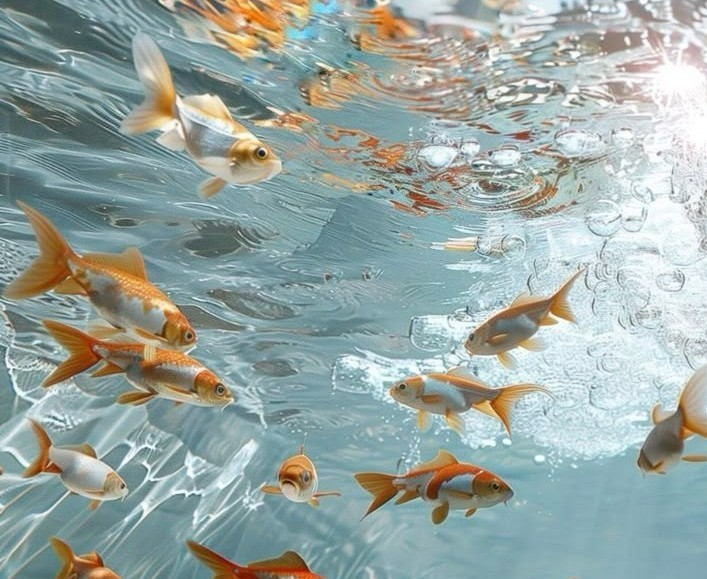

El océano cubre más del setenta por ciento de nuestro planeta y, aun así, sigue siendo uno de los territorios menos explorados
y más misteriosos de la Tierra. Bajo sus aguas se extiende un universo silencioso lleno de vida, movimiento y colores que
desafían la imaginación. Desde las zonas más iluminadas hasta las profundidades más oscuras, el mar alberga criaturas
extraordinarias y paisajes naturales que parecen sacados de un sueño.
Dream Ocean nace como una experiencia visual y educativa que busca despertar la curiosidad por la vida marina. Aquí podrás adentrarte en el mundo de las criaturas
del océano, conocer sus formas, comportamientos y la importancia que tienen dentro del equilibrio natural del planeta. Cada especie cumple un papel fundamental en
los ecosistemas marinos, y su preservación es clave para el futuro de la vida en la Tierra.
Más allá de su belleza, el océano también es un recordatorio de la fragilidad de la naturaleza. La contaminación, el cambio climático y
la actividad humana han puesto en riesgo a muchas especies marinas. Por ello, explorar el océano también implica comprenderlo, respetarlo
y protegerlo. A través de esta página, buscamos generar conciencia y admiración por este mundo azul que nos conecta a todos.
Sumérgete en Dream Ocean, explora sus profundidades y deja que el mar te envuelva con su misterio, su calma y su infinita grandeza.

Bajo la superficie del mar existe un universo que parece sacado de un sueño. Entre corrientes suaves y luces que se filtran desde lo alto, habitan seres de formas imposibles y movimientos hipnóticos. Medusas que flotan como si danzaran, peces transparentes y criaturas bioluminiscentes transforman la oscuridad en un espectáculo natural.
Este mundo submarino nos recuerda que aún quedan secretos por descubrir. Cada especie es una muestra de adaptación, belleza y misterio, y nos invita a mirar el océano no solo como agua, sino como un espacio vivo lleno de historias ocultas.
El océano no es un solo ambiente, sino una combinación de múltiples ecosistemas que van desde arrecifes de coral poco profundos hasta abismos de miles de metros de profundidad. Cada uno cumple una función esencial para el planeta, regulando el clima, produciendo oxígeno y sirviendo de hogar a millones de especies.
Los arrecifes, manglares y praderas marinas son especialmente importantes, ya que actúan como refugios naturales y protegen las costas de la erosión. Cuidarlos es clave para la salud del océano y de la vida en la Tierra.
A pesar de su inmensidad, el océano es vulnerable. La contaminación, la sobrepesca y el cambio climático han puesto en peligro a muchas especies marinas y a sus hábitats. Pequeñas acciones humanas tienen grandes consecuencias bajo el agua.
Conocer el océano es el primer paso para protegerlo. A través de la educación, la conciencia ambiental y el respeto por la naturaleza, podemos ayudar a conservar este mundo azul para las futuras generaciones.